Sep 13th, 2022 (Fig1: ROI plots, layer plots 10)¶
Motivation: ROIs, top, flat, coverage, etc.
# HIDE CODE
import os
import sys
from pprint import pprint
from copy import deepcopy as dc
from os.path import join as pjoin
from scipy.ndimage import gaussian_filter
from IPython.display import display, IFrame, HTML
# tmp & extras dir
git_dir = pjoin(os.environ['HOME'], 'Dropbox/git')
extras_dir = pjoin(git_dir, 'jb-Ca-fMRI/_extras')
fig_base_dir = pjoin(git_dir, 'jb-Ca-fMRI/figs')
tmp_dir = pjoin(git_dir, 'jb-Ca-fMRI/tmp')
# GitHub
sys.path.insert(0, pjoin(git_dir, '_Ca-fMRI'))
from figures.fighelper import *
from analysis.final import *
from utils.render import *
# warnings, tqdm, & style
warnings.filterwarnings('ignore', category=DeprecationWarning)
from tqdm.notebook import tqdm
%matplotlib inline
set_style()
Fig dir¶
fig_dir = pjoin(fig_base_dir, 'paper2.0', 'ROI-figs')
os.makedirs(fig_dir, exist_ok=True)
print(fig_dir)
merge_thres = {
128: 0.376,
512: 0.444,
}
kws_fig = {
'transparent': True,
'bbox_inches': 'tight',
'dpi': 300,
}
/home/hadi/Dropbox/git/jb-Ca-fMRI/figs/paper2.0/ROI-figs
Prepare¶
nn = 512
num_k = 7
mice = Mice(nn)
bt_dict, props_bo, props_ca = default_props(mice, num_k, perc=15)
bt = BootStrap(**props_ca)
pal = prepare_palette()
Top / flat¶
bs = Base(mice)
top, flat = bs.load_top_flat()
parc_top, parc_flat = mice.parcel.load_top_flat()
top, parc_top = filter_boundaries([top, parc_top], top > 0)
flat, parc_flat = filter_boundaries([flat, parc_flat], flat > 0)
regions = np.unique(parc_flat[parc_flat.nonzero()])
hcl = mice.parcel.decode(regions)
regions_l = mice.parcel.encode(hcl[hcl[:, 0] == 1])
regions_r = mice.parcel.encode(hcl[hcl[:, 0] == 2])
fig, ax = create_figure(1, 1, (5, 3))
ax.imshow(mwh(flat == 0, flat), cmap='Greys_r')
x2p = mwh(~np.isin(parc_flat, regions_l), parc_flat)
ax.imshow(x2p, cmap='Spectral_r')
remove_ticks(ax)
figname = f"parc_flat.png"
fig.savefig(pjoin(fig_dir, figname), **kws_fig)
plt.show()
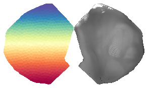
fig, ax = create_figure(1, 1, (3, 3))
ax.imshow(mwh(top == 0, top), cmap='Greys_r')
x2p = mwh(~np.isin(parc_top, regions_l), parc_top)
ax.imshow(x2p, cmap='Spectral_r')
remove_ticks(ax)
figname = f"parc_top.png"
fig.savefig(pjoin(fig_dir, figname), **kws_fig)
plt.show()
Optical¶
from register.register import reset_ants_img
mice.setup_anat_data()
key = 'sub-SLC04_ses-3'
roi_2d = f"{key}_space-indiv2d_cols.nii.gz"
roi_2d = pjoin(mice.cfg.masks_dir, roi_2d)
roi_2d = ants.image_read(roi_2d, pixeltype='unsigned int')
roi_2d = reset_ants_img(
img=roi_2d.numpy().squeeze(),
spacing=roi_2d.spacing[:2],
origin=0, use_um=False,
)
ref = mice.ref[key].load_ants('float')
ref = reset_ants_img(
img=ref.numpy().squeeze(),
spacing=ref.spacing[:2],
origin=0, use_um=False,
)
mask = mice.mask2d[key].load_ants('unsigned int')
roi_2d = ants.resample_image_to_target(
image=roi_2d, target=mask,
interp_type='genericLabel',
)
ref = ants.resample_image_to_target(
image=ref, target=mask,
interp_type='linear',
)
roi_2d *= mask
ref *= mask
mask = mask.numpy()
roi_2d = roi_2d.numpy()
ref = ref.numpy()
regions_here = roi_2d[roi_2d.nonzero()]
regions_here = np.unique(regions_here)
hcl = mice.parcel.decode(regions_here)
regions_here_r = regions_here[hcl[:, 0] == 2]
for r in regions_here:
hh, cc, ll = mice.parcel.decode(r).ravel()
if ll == 1:
roi_2d[roi_2d == r] = mice.parcel.encode(f"{hh}-{cc}-0")
roi_tr, m_tr, ref_tr = filter_boundaries([roi_2d, mask, ref], mask)
for cmap_name, cmap in {
'random': get_rand_cmap(len(regions_here_r), get_rng(19)),
'spectral': 'Spectral_r', }.items():
fig, ax = create_figure(1, 1, (4, 4))
plt.imshow(mwh(m_tr == 0, ref_tr), cmap='Greys_r', interpolation='none')
plt.imshow(
X=mwh(~np.isin(roi_tr, regions_here_r), roi_tr),
cmap=cmap,
interpolation='none',
alpha=1.0,
)
remove_ticks(ax)
figname = f"ROI-2d_{cmap_name}.png"
fig.savefig(pjoin(fig_dir, figname), **kws_fig)
plt.show()
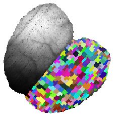
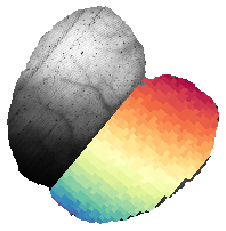
key = 'sub-SLC04_ses-2'
roi_3d = f"{key}_space-indiv3d_cortex.nii.gz"
roi_3d = pjoin(mice.cfg.masks_dir, roi_3d)
roi_3d = ants.image_read(roi_3d, pixeltype='unsigned int')
roi_3d = roi_3d.numpy()
regions_included = roi_3d[roi_3d.nonzero()]
regions_included = np.unique(regions_included)
hcl = mice.parcel.decode(regions_included)
regions_included_surface = regions_included[hcl[:, 2] == 0]
len(regions_included), len(regions_included_surface)
(2766, 995)
roi_3d[~np.isin(roi_3d, regions_included_surface)] = 0
m3d = mice.mask3d[key].load_ants().numpy()
t1w = mice.T1w[key].load_ants().numpy()
jj = 41
x2p = roi_3d[..., jj].T.copy()
x2p_rename = np.zeros(x2p.shape)
regions = np.unique(x2p[x2p.nonzero()])
for i, r in enumerate(regions):
x2p_rename[x2p == r] = i + 1
_m3d = m3d[..., jj].T
_t1w = t1w[..., jj].T
_roi3d, _m3d, _t1w = filter_boundaries([x2p_rename, _m3d, _t1w], _m3d)
for cmap_name, cmap in {
'random': get_rand_cmap(len(regions_here_r), get_rng(4)),
'spectral': 'Spectral_r', }.items():
fig, ax = create_figure(1, 1, (7, 5))
ax.imshow(mwh(_m3d == 0, _t1w), cmap='Greys_r', interpolation='none')
ax.imshow(mwh(_roi3d == 0, _roi3d), cmap=cmap, interpolation='none')
remove_ticks(ax)
figname = f"ROI-3d-coronal_{cmap_name}.png"
# fig.savefig(pjoin(fig_dir, figname), **kws_fig)
plt.show()
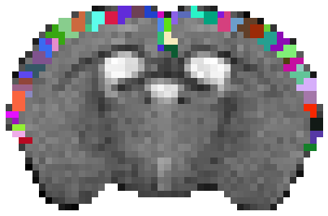
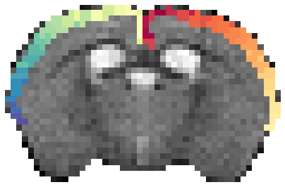
jj = 26
_roi3d, _m3d, _t1w = filter_boundaries([roi_3d[jj], m3d[jj], t1w[jj]], m3d[jj])
for cmap_name, cmap in {
'random': get_rand_cmap(len(regions_here_r), get_rng(4)),
'spectral': 'Spectral_r', }.items():
fig, ax = create_figure(1, 1, (8, 4))
ax.imshow(mwh(_m3d == 0, _t1w), cmap='Greys_r', interpolation='none')
x2p = mwh(~np.isin(_roi3d, regions_included_surface), _roi3d)
ax.imshow(x2p, cmap=cmap, interpolation='none')
remove_ticks(ax)
figname = f"ROI-3d-sagittal_{cmap_name}.png"
fig.savefig(pjoin(fig_dir, figname), **kws_fig)
plt.show()
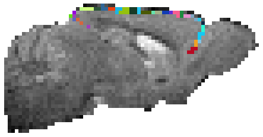
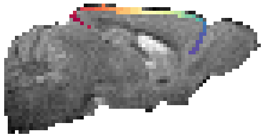
x2p = roi_3d[:, 13].copy()
x2p_rename = np.zeros(x2p.shape)
for i, r in enumerate(np.unique(x2p[x2p.nonzero()])):
x2p_rename[x2p == r] = i + 1
plt.imshow(x2p_rename, cmap='Spectral_r')
<matplotlib.image.AxesImage object at 0x7f4ee1068d30>
from register.register import Register
reg = Register(mice)
reg.set_mode('ca2')
output = reg.get_accepted_regions()
Name: cortex . . . a total of: 542 regions accepted, 172 regions rejected. accept ratio: 75.91 %, reject ratio: 24.09 %, using a presence threshold of 20.0 %
list(output)
['df', 'cortex', 'subcortex']
freq = output['cortex']['freq']
top, flat = gr_ca.load_top_flat()
# load parcel flatt & top
parcel_flat = 'parcel2d-flat_10um.nii.gz'
parcel_flat = pjoin(mice.cfg.parcel_dir, parcel_flat)
parcel_flat = ants.image_read(parcel_flat).numpy()
parcel_top = 'parcel2d-top_10um.nii.gz'
parcel_top = pjoin(mice.cfg.parcel_dir, parcel_top)
parcel_top = ants.image_read(parcel_top).numpy()
plt.imshow(top)
<matplotlib.image.AxesImage object at 0x7f200c95f460>

freq_ctx = np.zeros(top.shape, dtype=float)
for r, f in freq.items():
m = parcel_top == r
if not m.sum():
continue
freq_ctx[m] = f
freq_ctx *= 100
f_tr, t_tr = filter_boundaries([freq_ctx, top], top.astype(bool))
fig, ax = create_figure()
x2p = np.ma.masked_where(t_tr == 0, t_tr)
plt.imshow(x2p)
x2p = np.ma.masked_where(t_tr == 0, f_tr)
plt.imshow(x2p, cmap='nipy_spectral')
plt.colorbar()
remove_ticks(ax)
name = f'coverage-top'
figname = f"{name}.pdf"
fig.savefig(pjoin(fig_dir, figname), bbox_inches='tight')
for dpi in [100, 300, 600]:
figname = f"{name}_dpi{dpi}.png"
fig.savefig(pjoin(fig_dir, figname), dpi=dpi, bbox_inches='tight', transparent=True)
plt.show()

freq_ctx = np.zeros(flat.shape, dtype=float)
for r, f in freq.items():
m = parcel_flat == r
if not m.sum():
continue
freq_ctx[m] = f
freq_ctx *= 100
f_tr, t_tr = filter_boundaries([freq_ctx, flat], flat.astype(bool))
fig, ax = create_figure(figsize=(6, 3))
x2p = np.ma.masked_where(t_tr == 0, t_tr)
plt.imshow(x2p)
x2p = np.ma.masked_where(t_tr == 0, f_tr)
plt.imshow(x2p, cmap='nipy_spectral')
plt.colorbar()
remove_ticks(ax)
name = f'coverage-flat'
figname = f"{name}.pdf"
fig.savefig(pjoin(fig_dir, figname), bbox_inches='tight')
for dpi in [100, 300, 600]:
figname = f"{name}_dpi{dpi}.png"
fig.savefig(pjoin(fig_dir, figname), dpi=dpi, bbox_inches='tight', transparent=True)
plt.show()

Layer plots¶
hemis = mice.al.make_hemis()
root = mice.al.get_masks('root')
template = mice.al.mcc.get_template_volume()[0]
layer_masks = mice.al.make_layer_masks()
lm = np.zeros(template.shape)
lm_shallow = np.zeros(template.shape)
for i, m in enumerate(layer_masks.values()):
lm[m] = i + 1
if i > 2:
continue
lm_shallow[m] = 1
cmap = make_cmap(['#FFFFFF', '#e817dd'])
turbo = sns.color_palette('turbo', as_cmap=True)
colors = [0.03, 0.23, 0.42, 0.68, 0.92, 1.0]
colors = [turbo(i) for i in colors]
cmap_turbo = matplotlib.colors.ListedColormap(
colors=colors, name='turbo')
cmap_turbo
turbo

under
bad
over
ii = 61
fig, ax = create_figure(1, 1, (10, 8))
x2p = template[ii]
x2p = mwh(root[ii] == 0, x2p)
ax.imshow(x2p, cmap='Greys_r')
x2p = lm[ii]
x2p = mwh(np.logical_or(x2p == 0, hemis[ii] == 2), x2p)
ax.imshow(x2p, cmap=cmap_turbo)
x2p = lm_shallow[ii]
x2p = mwh(np.logical_or(x2p == 0, hemis[ii] == 1), x2p)
ax.imshow(x2p, cmap=cmap, vmin=0, vmax=1)
remove_ticks(ax)
fig.savefig(pjoin(fig_dir, f'template.png'), **kws_fig)
plt.show()
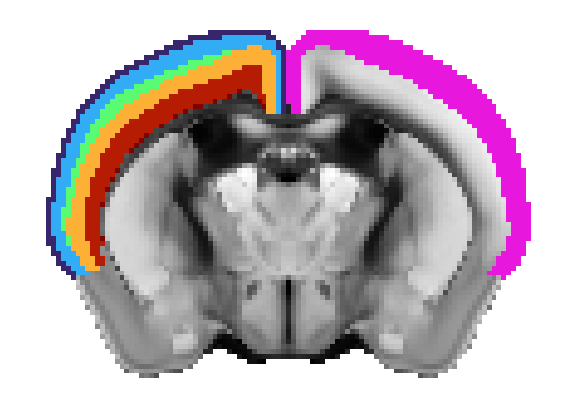
fig, cax, cbar = cbar_only(
cmap=matplotlib.colors.ListedColormap(
colors=colors[:-1][::-1], name='turbo'),
edgecolor='k',
tick_position='left',
figsize=(1.0, 5.0),
)
cax.set_title('Layer', fontsize=22, y=1.04, rotation=0)
cax.yaxis.set_visible(False)
fig.savefig(pjoin(fig_dir, f'turbo.png'), **kws_fig)
fig.savefig(pjoin(fig_dir, f'turbo.pdf'), **kws_fig)
fig
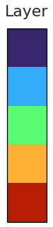
fig, cax, cbar = cbar_only(
cmap=matplotlib.colors.ListedColormap(['#e817dd', '#e817dd']),
edgecolor='k',
tick_position='left',
figsize=(3.0, 1.0),
)
cax.set_title('ROI depth', fontsize=22, y=1.04, rotation=0)
cax.yaxis.set_visible(False)
fig.savefig(pjoin(fig_dir, f'purp.png'), **kws_fig)
fig.savefig(pjoin(fig_dir, f'purp.pdf'), **kws_fig)
fig
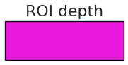
Layer plots: \(10\mu m\)¶
from register.atlas import Allen
%%time
al10 = Allen(10)
hemis = al10.make_hemis()
root = al10.get_masks('root')
template = al10.mcc.get_template_volume()[0]
CPU times: user 15.5 s, sys: 9.87 s, total: 25.4 s
Wall time: 26.2 s
subtree, _ = al10.get_subtree(315, show=False)
layers = collections.defaultdict(list)
for node in subtree.leaves():
tag = node.tag.split('(')[0].strip()
for ll in ['1', '2/3', '4', '5', '6a', '6b']:
if tag[-len(ll):] == ll:
layers[ll].append(node.identifier)
layers = dict(sorted(layers.items()))
def fun(i):
m = al10.mcc.get_structure_mask(i)[0]
return np.where(m)
%%time
layer_masks = {}
for k, struct_ids in layers.items():
with joblib.parallel_backend('multiprocessing'):
results = joblib.Parallel(n_jobs=25)(
joblib.delayed(fun)(i)
for i in struct_ids
)
x, y, z = [], [], []
for a, b, c in results:
x.append(a)
y.append(b)
z.append(c)
x = np.concatenate(x)
y = np.concatenate(y)
z = np.concatenate(z)
m = np.zeros(template.shape)
m[x, y, z] = 1
layer_masks[k] = m.astype(bool)
list(layer_masks)
CPU times: user 17.7 s, sys: 54.2 s, total: 1min 11s
Wall time: 13min 37s
['1', '2/3', '4', '5', '6a', '6b']
lm = np.zeros(template.shape)
lm_shallow = np.zeros(template.shape)
for i, m in enumerate(layer_masks.values()):
lm[m] = i + 1
if i > 2:
continue
lm_shallow[m] = 1
ii = 610
fig, ax = create_figure(1, 1, (10, 8))
x2p = template[ii]
x2p = mwh(root[ii] == 0, x2p)
ax.imshow(x2p, cmap='Greys_r')
x2p = lm[ii]
x2p = mwh(np.logical_or(x2p == 0, hemis[ii] == 2), x2p)
ax.imshow(x2p, cmap=cmap_turbo)
x2p = lm_shallow[ii]
x2p = mwh(np.logical_or(x2p == 0, hemis[ii] == 1), x2p)
ax.imshow(x2p, cmap=cmap, vmin=0, vmax=1)
remove_ticks(ax)
fig.savefig(pjoin(fig_dir, f'template10.png'), **kws_fig)
plt.show()
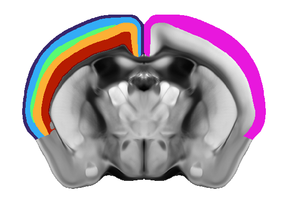